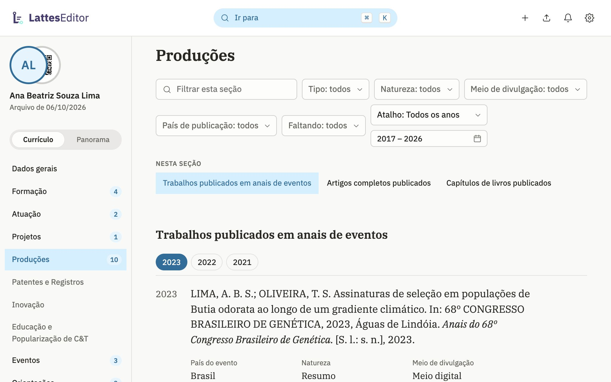
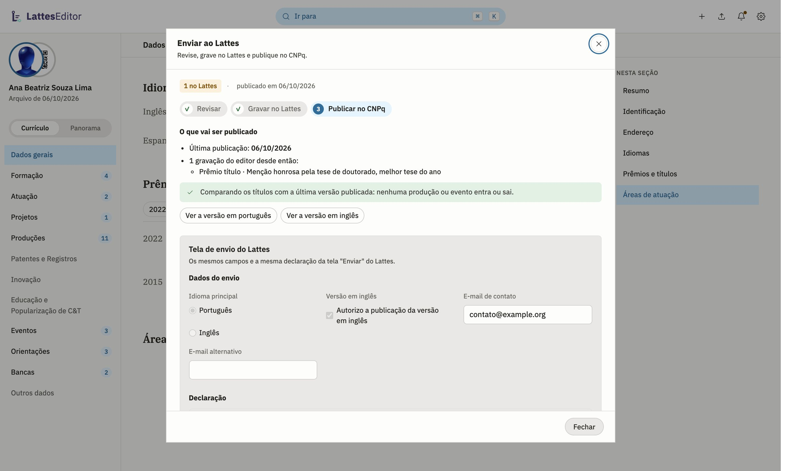

Código aberto · Gratuito · Sem conta
Um editor moderno para o Currículo Lattes
O currículo abre direto do Lattes e fica no seu computador. Você edita com busca, atalhos e formulários que não se perdem, e as mudanças voltam ao Lattes pela extensão ou pelo Importar.
Baixar o app
Como funciona
A extensão liga o app à sua sessão do Lattes. Sem ela, o currículo entra e sai pelo arquivo do Exportar.
Instale a extensão
A extensão para Chrome e Brave usa a aba do Lattes em que você já está logado. Nenhuma senha passa por ela nem pelo app. No primeiro uso, ela lista o que lê e grava e espera o seu ok.
Abra o currículo
O app pede ao Lattes a mesma exportação do menu Exportar e abre o currículo em segundos. Sem a extensão, exporte no Lattes e solte o ZIP na janela do app. Depois, Atualizar do Lattes traz o que mudou lá: só o que é novo, ou o currículo inteiro, lido das telas. A edição não precisa de conexão.
Edite
O menu lateral leva a cada seção. ⌘K (Ctrl K fora do Mac) encontra seções, grupos e tipos de item pelo nome. País, idioma, natureza e os outros campos de lista do Lattes são listas aqui também. O app salva cada edição na hora.
Envie ao Lattes
O painel Enviar ao Lattes vai em três passos: revisar, gravar e publicar no CNPq. A extensão grava em segundo plano, pelos formulários do Lattes, e confere cada alteração, inclusive as produções novas. O livro, que o formulário de inclusão não leva, vai pelo Importar, num arquivo que o app gera. O que ela ainda não grava aparece campo a campo, com o valor antigo ao lado do novo.
Panorama
O currículo em números
Nove gráficos calculados a partir do XML aberto, sem consulta externa. Um clique num número abre a seção do currículo filtrada por aquele tipo, período ou campo que falta.

Uma coluna por ano, com uma cor para cada tipo de produção. Os anos sem nada vêm marcados, e um clique numa barra abre a seção com aqueles itens.
Quadriênios em planilha
A tabela de quadriênios da CAPES sai como CSV. O quadriênio ainda aberto vem marcado "em curso". A coluna Total inclui os itens sem ano, que não caem em quadriênio nenhum.
Saúde do currículo
Conta os itens sem DOI, sem ISSN, sem palavras-chave ou sem agência de fomento. Cada contagem abre a seção com o filtro "Faltando" aplicado. O mesmo filtro existe em cada seção do currículo, junto com o de período.
Recursos
O que o editor faz
Cada seção lista os itens por tipo e ano, com um índice ao lado e filtros por período (os quadriênios da CAPES entre eles) e por campo que falta. Um clique abre o item para editar. A busca do ⌘K encontra seções e também tipos de item novo.

Todo tipo de item
O app cria qualquer item do currículo, de produções a patentes. Colar um DOI preenche a produção com os dados da Crossref. Com a extensão, instituição, curso, área do conhecimento e agência de fomento vêm das listas do próprio Lattes.
Trazer itens de outro XML
Produções de uma exportação antiga ou do XML de outro programa entram pelo menu de configurações. Antes de entrar, cada item é comparado com o currículo, e o app aponta a duplicata provável e o motivo ("título igual, mesmo ano"). Só entra o que você marcar.
Revisão do currículo
Passa pelo currículo inteiro e lista campos obrigatórios vazios, valores fora das listas do Lattes, anos e autores inconsistentes, DOI e ISSN inválidos, duplicatas e vínculos antigos marcados como atuais. Um clique leva ao item. A revisão não altera nada.
Histórico e cópias de segurança
O Histórico mostra, por dia, cada edição, cada envio ao Lattes e cada exportação aberta, com o que mudou desde a anterior, e qualquer um desses momentos volta a ser a cópia de trabalho. No alto, ele compara o currículo com o Lattes de agora. A primeira exportação e o Lattes de antes de cada envio ficam também na pasta Documentos, e o app não apaga essas cópias.
Impressão e PDF
Imprime ou salva em PDF seguindo a NBR 14724, com referências na NBR 6023. Também gera um código QR que leva ao currículo público.
Dados pessoais mascarados
Em Dados gerais, documentos, nascimento, filiação e endereço ficam ocultos até você clicar no olho ao lado do título. A foto do perfil vem do CNPq, e o app troca a foto no Lattes pela extensão.
Extensão do conector
Enviar ao Lattes
Três passos: revisar, gravar e publicar. A extensão grava na sua sessão do Chrome ou Brave e confere cada alteração no próprio Lattes.
O painel lista o que foi gravado, com o valor antigo, e desfaz as alterações de campo. A publicação no CNPq só sai com a declaração marcada por você.

O que a extensão grava
Pela extensão, na sua sessão
- Resumo, idiomas, endereço e identificação
- Formação, com instituição, curso e agência pelas buscas do Lattes
- Vínculos de atuação, com as atividades e o órgão
- Eventos, prêmios e formação complementar
- Patentes e registros
- DOI, palavras-chave, áreas e setores das produções
- Orientações concluídas
- Foto do perfil
- Campos que só as telas do Lattes têm, como nome social, celular e a visibilidade de cada item
- Inclusão de itens novos, produções inclusive, e exclusão de idioma e vínculo
- Importar do livro, que o formulário de inclusão não leva
- Enviar ao CNPq, com a declaração marcada por você
Ainda por você, no Lattes
- Campos que o formulário do Lattes não tem, como o nome do evento em inglês: ficam no painel, com o valor para copiar
Privacidade
Tudo fica no seu computador
Não há conta nem servidor. O currículo fica no seu computador, cifrado com AES-GCM, com a chave no chaveiro do sistema.
O envio ao Lattes passa pela sua sessão no navegador. Sem chaveiro disponível, o app avisa e não guarda nada naquela sessão, para o currículo não ficar legível no disco.
Política de privacidade da extensãoCópia de trabalho
Perguntas frequentes
Como instalo a extensão?
Pela Chrome Web Store; o Brave instala da mesma loja. No primeiro uso, o painel mostra o que ela lê e envia e pede um "ok". A loja atualiza a extensão sozinha.
O app se atualiza?
Sim. Ao abrir e a cada 15 minutos ele confere se saiu versão nova. Quando sai, um aviso no canto oferece Atualizar; o app baixa o pacote, confere a assinatura e reinicia. Para conferir na hora, use Verificar atualizações no menu de configurações.
Posso usar sem a extensão?
Sim. Exporte no Lattes (Ferramentas, Exportar) e solte o ZIP na janela do app. Sem a extensão, nada é gravado no Lattes pelo app: produções novas vão pelo arquivo do Importar, e o resto fica no painel, campo a campo, para copiar.
O que acessa a internet?
A busca por DOI envia só o DOI à Crossref, e a foto vem do CNPq pelo código do currículo. A extensão fala com o Lattes pela sua sessão no navegador. O app consulta o GitHub para saber se há versão nova. O currículo em si não sai do computador.
O que é a versão Dev?
Uma montagem do app feita a cada mudança no código, publicada na pré-estreia "dev" do GitHub com a extensão Dev dentro. É o que entra na próxima versão. Tem outro nome e outro ícone, e pode ficar instalado ao lado do app publicado.
Baixar o LattesEditor
Gratuito e de código aberto. A extensão é opcional: ela liga o app à sua sessão do Lattes.
O app
No macOS, assinado e notarizado pela Apple. No Windows, o SmartScreen avisa na primeira abertura: abra os detalhes do aviso e escolha executar. O app se atualiza sozinho.
A extensão do conector
Para Chrome e Brave, pela Chrome Web Store, que a atualiza sozinha.
Versão Dev e notas
A versão Dev é montada a cada mudança no código e chega antes da versão publicada. As notas listam o que mudou em cada versão.